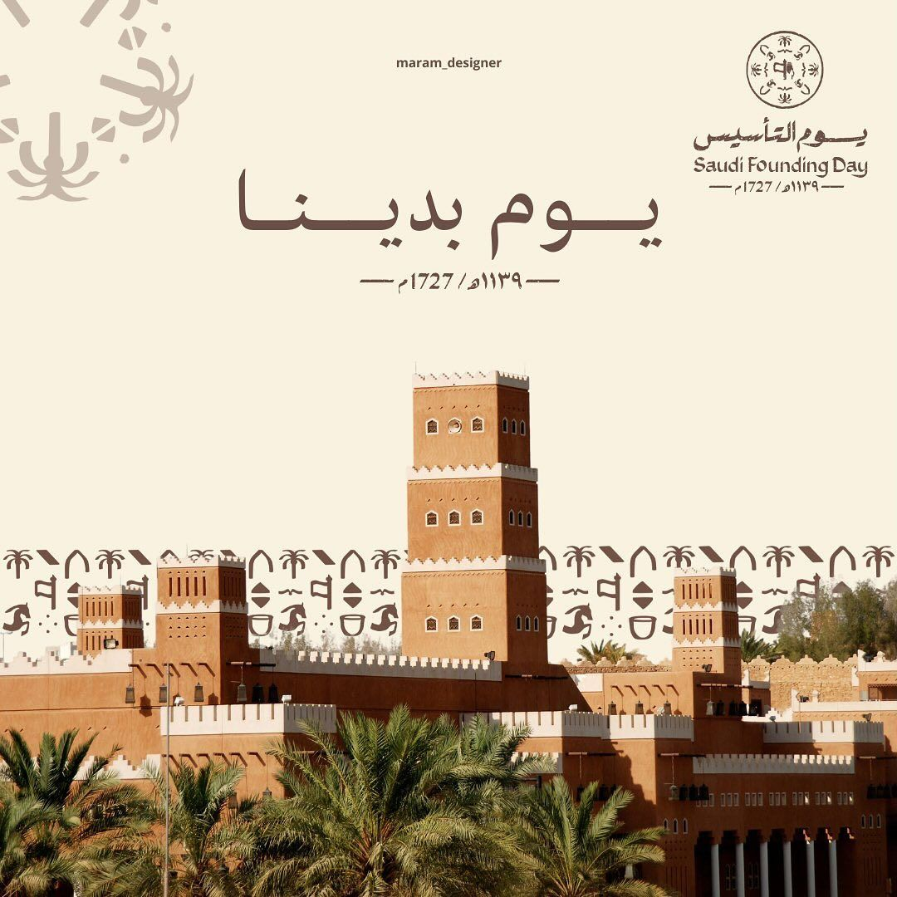
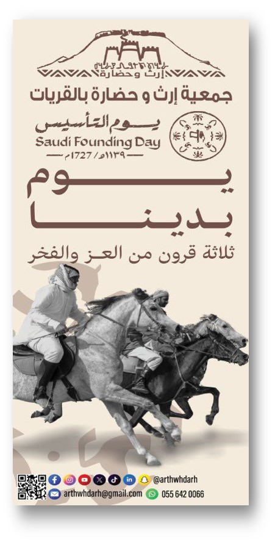

١ · Founding Day · ٢٢ فبراير
فعالية وطنية
يوم التأسيس
يوم التأسيس هو مناسبة وطنية للاحتفاء بذكرى تأسيس الدولة السعودية الأولى على يد الإمام محمد بن سعود قبل ثلاثة قرون، حين أسس كيانًا سياسيًا رسّخ الوحدة والاستقرار والازدهار، وأصبحت الدرعية عاصمةً للدولة السعودية الأولى. وقد تم اختيار يوم 22 فبراير تخليدًا لتولي الإمام محمد بن سعود الحكم في الدرعية عام 1139هـ الموافق 1727م، ليكون يومًا يستذكر فيه أبناء الوطن عمق تاريخهم وإرثهم العريق. وترفع جمعية إرث وحضارة أسمى التهاني بهذه المناسبة الوطنية العزيزة، اعتزازًا بتاريخ المملكة وهويتها الراسخة، سائلين الله دوام الأمن والعز والازدهار للوطن وقيادته.

